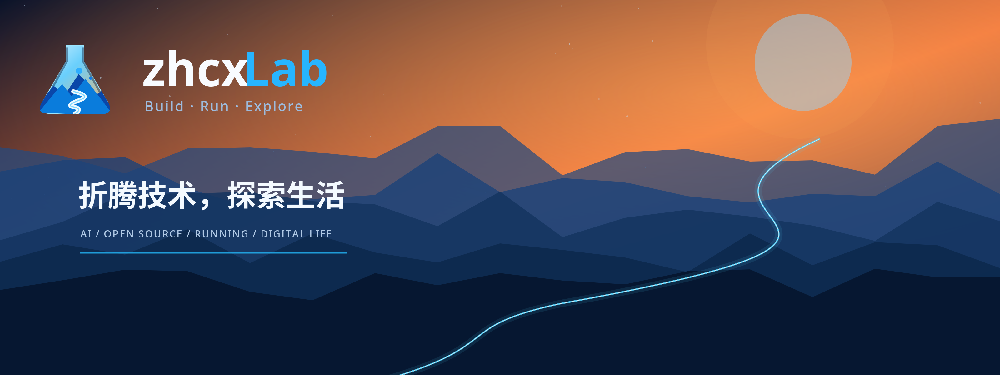

01 / EXPLORE
四个方向，同一种好奇心。
从 AI 到开源，从跑步到记录。
把每一次探索，留下一点痕迹。
02 / FIELD NOTES
实验手记
先记录，再慢慢形成自己的方法。
这里先收录四篇栏目开篇说明；你可以在工作台起草后，导出文章继续编辑。
03 / ABOUT THIS LAB折腾技术，
折腾技术，
探索生活。
zhcxLab 是一个个人实验空间。这里放下 AI 与工具的尝试、开源与自建的探索、跑步与日常的记录。
Build · Run · Explore，既是栏目之间的联系，也是这个小站的出发点。
记录，思考，THE LAB IS ALWAYS OPEN.
然后继续折腾。